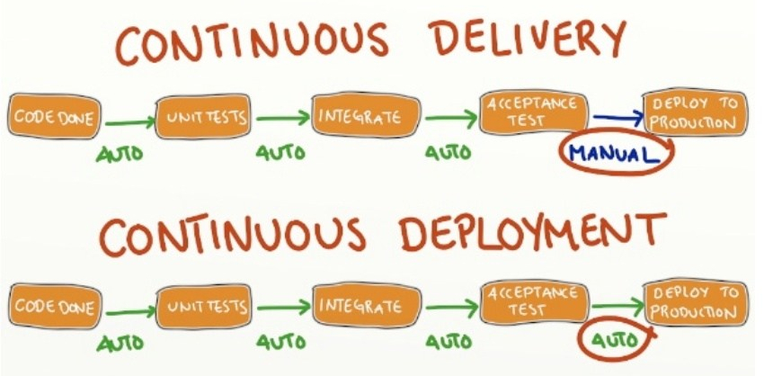

# Continuous Software Development Learn about continuous integration, continuous testing, continuous delivery and continuous deployment. This material is part of [architecture & deployment course](https://github.com/MediaComem/comem-archidep) for [Media Engineering](https://heig-vd.ch/formations/bachelor/filieres/ingenierie-des-medias). **Recommended reading** * [Collaborating with Git](../git-collaborating/) <!-- START doctoc --> <!-- END doctoc --> --- class: center, middle ## What is continuous software development? .breadcrumbs[<a href="#1">Continuous Software Development</a>] <p class='center'><img class='w80' src='images/continuous.png' /></p> --- ### Continuous et al. .breadcrumbs[<a href="#1">Continuous Software Development</a> > <a href="#2">What is continuous software development?</a>] Continuous software development is an umbrella term that describes several aspects of [**iterative software development**][iterative]: * [**C**ontinuous **I**ntegration (CI)][ci] * [**C**ontinuous **T**esting (CT)][ct] * [**C**ontinous **D**elivery (CDE)][cde] * [**C**ontinous **D**eployment (CD)][cd] --- ### The waterfall model .breadcrumbs[<a href="#1">Continuous Software Development</a> > <a href="#2">What is continuous software development?</a>] Iterative development is a solution to the problems of the earlier **waterfall model** of software development. In this model, progress flows in largely one direction through the phases of conception, design, implementation, verification and maintenance. .grid-35[ The idea came from the manufacturing and construction industries, and was initially applied to software development. However, it makes it **difficult to respond to changes in requirements**. If you are already in the verification phase, it's too late for new design and implementation. ] .grid-65[ <img class='w100' src='images/waterfall.png' /> ] --- ### Iterative software development .breadcrumbs[<a href="#1">Continuous Software Development</a> > <a href="#2">What is continuous software development?</a>] In contrast, iterative software development consists in developing software through **repeated cycles** (iterations) and in smaller portions at a time (incrementally). <p class='center'><img class='w70' src='images/iterative.png' /></p> The planning, analysis, implementation, testing and evaluation **phases are repeated at each iteration** throughout the project. --- #### Advantages of iterative software development .breadcrumbs[<a href="#1">Continuous Software Development</a> > <a href="#2">What is continuous software development?</a> > <a href="#5">Iterative software development</a>] The main advantages of developing iteratively are: * **User involvement:** the customer is involved at each and every iteration for planning and requirements, which makes it much easier to identify problems and react to changes in requirements. * **Human resources:** less staff is required compared to the waterfall model. * **Time limitation:** the first iterations can potentially be delivered within weeks while a waterfall project usually takes months. --- ### Agile software development .breadcrumbs[<a href="#1">Continuous Software Development</a> > <a href="#2">What is continuous software development?</a>] [**Agile software development**][agile] is one of the most popular iterative development models. It was popularized by the [Manifesto for Agile Software Development][agile-manifesto] which describes the values and principles espoused by the model. It has been adopted by many software development companies to improve the quality and speed of software. There are various [agile frameworks][agile-frameworks] you can use to organize your work. Each has a slightly different focus: * [eXtreme Programming (XP)][xp] (focus on practices) * [Kanban][kanban] (focus on workflow) * [Scrum][scrum] (focus on workflow) --- ### What is continuous software development, again? .breadcrumbs[<a href="#1">Continuous Software Development</a> > <a href="#2">What is continuous software development?</a>] To use agile software development or other iterative development models, you **must be able to move and react quickly**. Hence these various so-called "continuous" practices which help achieve this: Practice | Description :--- | :--- [**C**ontinuous **I**ntegration (CI)][ci] | Regularly merge developer work to a shared mainline to avoid "integration hell". [**C**ontinuous **T**esting (CT)][ct] | Automate testing to reduce feedback waiting time for developers. [**C**ontinous **D**elivery (CDE)][cde] | Automate software delivery so that it can be reliably released at any time. [**C**ontinous **D**eployment (CD)][cd] | Automate software deployment to regularly provide new features to users. --- ## Continuous Integration (CI) .breadcrumbs[<a href="#1">Continuous Software Development</a>] [**C**ontinuous **I**ntegration (CI)][ci] is the practice of merging all developer work to a shared mainline regularly, instead of having each developer work independently for days or weeks on end, and suffering when the time comes to integrate their work back into the mainline. <p class='center'><img class='w80' src='images/git-workflow.png' /></p> This is often managed with [version control][vcs] systems such as [Git][git]. A software development team may define a [workflow][git-workflows] determining when to merge work back into the mainline (typically the `master` branch). --- ## Continuous Testing (CT) .breadcrumbs[<a href="#1">Continuous Software Development</a>] [**C**ontinuous **T**esting (CT)][ct] is the practice of using automated tests to obtain immediate feedback while developing instead of waiting for the Quality Assurance (QA) engineers to manually test the software. .grid-60[ Software such as websites or mobile applications have traditionally been tested manually. However, it **takes time to go through all possible paths** through an application and make sure it works. Every time code changes, someone potentially broke something that a manual tester might fail to notice. **Tests can be automated by writing them in code,** increasing their speed and avoiding boring and repetitive click work for manual testers. ] .grid-40[ <img class='w100' src='images/continuous-testing.png' /> ] .container[ Automated tests are often integrated into the continuous pipeline by running them automatically every time changes are pushed to **version control**. ] --- ## Continuous delivery (CDE) .breadcrumbs[<a href="#1">Continuous Software Development</a>] [**C**ontinous **D**elivery (CDE)][cde] is the practice of ensuring that software can be reliably released at any time, usually by automating the building, testing and releasing of software. This is often called a **deployment pipeline**. <p class='center'><img class='w70' src='images/continuous-delivery.png' /></p> --- ## Continuous deployment (CD) .breadcrumbs[<a href="#1">Continuous Software Development</a>] [**C**ontinous **D**eployment (CD)][cd] is one step further than [**C**ontinous **D**elivery (CDE)][cde]: also automating the deployment of the software in addition to its delivery. <p class='center'></p> --- ## Continuous software development .breadcrumbs[<a href="#1">Continuous Software Development</a>] .grid-40[ To recap, continuous software development is the practice of regularly integrating, testing, delivering and deploying software, usually through automation. ] .grid-60[ <p class='center'><img class='w100' src='images/continuous.png' /></p> ] .container[ There are many tools to help you do this. These are just a few examples: Tool | Description :--- | :--- [Jenkins][jenkins] | Open source automation server [Travis CI][travis] | Free continuous integration and testing service [GitLab CI][gitlab-ci] | Continous integration and delivery service [Codacy][codacy] | Automated code review service ] --- ## References .breadcrumbs[<a href="#1">Continuous Software Development</a>] * [Iterative development][iterative] vs. [Waterfall model][waterfall] * [Agile Software Development][agile]: [Kanban][kanban], [Scrum][scrum], [eXtreme Programming][xp] * [Continuous Integration][ci] * [Git Workflows][git-workflows] * [A Successful Git Branching Model][git-model] * [A Successful Git Branching Model Considered Harmful][git-model-harmful] * [Continuous Testing][ct] * [Continous Delivery][cde] * [Continous Deployment][cd] [agile]: https://en.wikipedia.org/wiki/Agile_software_development [agile-frameworks]: https://en.wikipedia.org/wiki/Agile_software_development#Agile_software_development_methods [agile-manifesto]: https://agilemanifesto.org/ [cd]: https://en.wikipedia.org/wiki/Continuous_deployment [cde]: https://en.wikipedia.org/wiki/Continuous_delivery [ci]: https://en.wikipedia.org/wiki/Continuous_integration [codacy]: https://www.codacy.com/ [ct]: https://en.wikipedia.org/wiki/Continuous_testing [git]: https://git-scm.com/ [gitlab-ci]: https://about.gitlab.com/product/continuous-integration/ [git-model]: https://nvie.com/posts/a-successful-git-branching-model/ [git-model-harmful]: https://barro.github.io/2016/02/a-succesful-git-branching-model-considered-harmful/ [git-workflows]: https://git-scm.com/book/en/v2/Git-Branching-Branching-Workflows [iterative]: https://en.wikipedia.org/wiki/Iterative_and_incremental_development [jenkins]: https://jenkins.io/ [kanban]: https://en.wikipedia.org/wiki/Kanban_(development) [scrum]: https://en.wikipedia.org/wiki/Scrum_(software_development) [travis]: https://jenkins.io/ [vcs]: https://en.wikipedia.org/wiki/Version_control [waterfall]: https://en.wikipedia.org/wiki/Waterfall_model [xp]: https://en.wikipedia.org/wiki/Extreme_programming